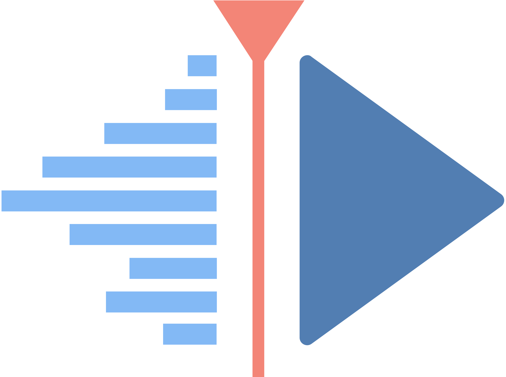
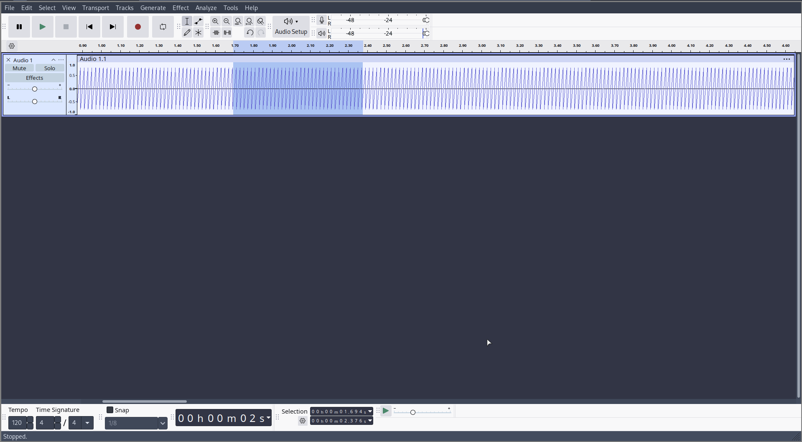
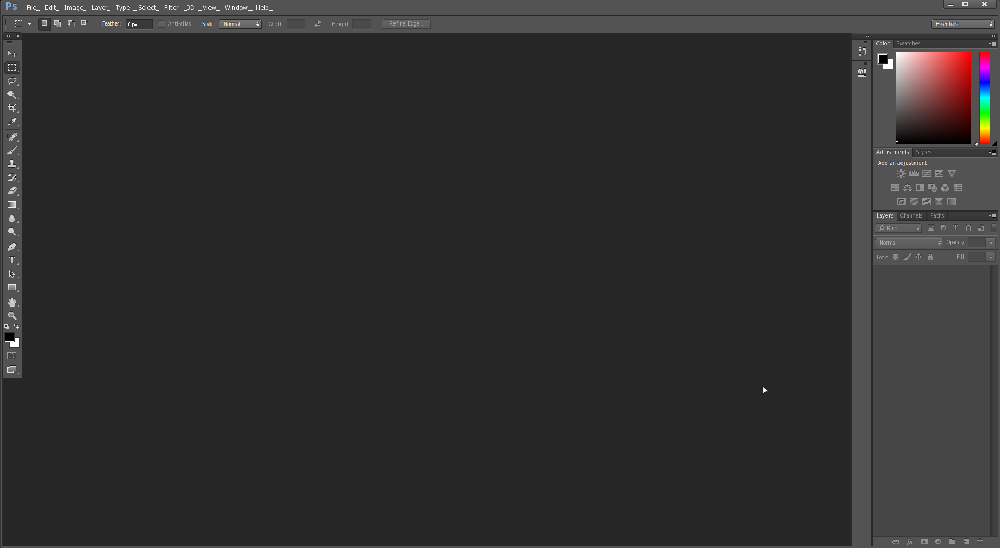

TL;DR: i use: Kdenlive, Audacity, Photoshop CC 2014, OBS
For video editing i use kdenlive which is a opensource program created by devs who made KDE too! you can check it out Here!

I use kdenlive on OS which i use is archlinux cause its great and is sleeky fast it uses ffmpeg for previewing videos which might be faster than propietary video codecs like adobe uses
At first the interface may seem to be sh#t but you can customize it like seen in this video and also save load layouts too!
And there is effects known from Premiere Pro like Transform which works just like distorting effect in Premiere Pro except you cant scretch though...
For audio editing i use Audacity which you get get Here!
Audacity is an opensource audio editing program that i do use time to time to edit some source sound effects and export some audio in other formats like OGG for example!
It comes with intuitive ui and great audio effects!

Hovewer for photo editing thumbnail editing i do not use something like GIMP Krita cause it just sucks but i meant to offend you P:
Instead i just use Photoshop CC 2014 on wine which flawlessly runs no i wont tell you where i got the app itself
Whats great about it? its very advanced and probably better than gimp its 2025 and gimp still has no blending options meanwhile Photoshop does since CS6!

But if you still want to get photoshop officially and support Adobe do so Here!
For video recording i use OBS Which is Free And Open Source you can get it Here!
OBS Is not only great because its Open Source but its very customizable like recording in different formats like mkv which works even while still not finished saved my lost gameplay recording! etc.